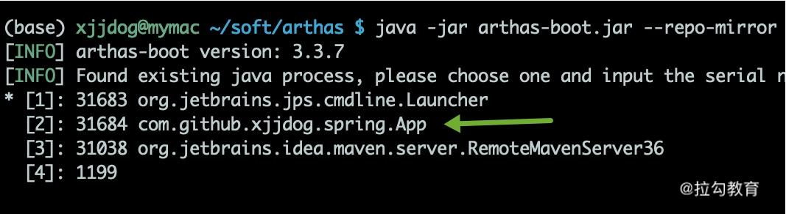

- 00 Java 性能优化，是进阶高级架构师的炼金石.md.html
- 01 理论分析：性能优化，有哪些衡量指标？需要注意什么？.md.html
- 02 理论分析：性能优化有章可循，谈谈常用的切入点.md.html
- 03 深入剖析：哪些资源，容易成为瓶颈？.md.html
- 04 工具实践：如何获取代码性能数据？.md.html
- 05 工具实践：基准测试 JMH，精确测量方法性能.md.html
- 06 案例分析：缓冲区如何让代码加速.md.html
- 07 案例分析：无处不在的缓存，高并发系统的法宝.md.html
- 08 案例分析：Redis 如何助力秒杀业务.md.html
- 09 案例分析：池化对象的应用场景.md.html
- 10 案例分析：大对象复用的目标和注意点.md.html
- 11 案例分析：如何用设计模式优化性能.md.html
- 12 案例分析：并行计算让代码“飞”起来.md.html
- 13 案例分析：多线程锁的优化.md.html
- 14 案例分析：乐观锁和无锁.md.html
- 15 案例分析：从 BIO 到 NIO，再到 AIO.md.html
- 16 案例分析：常见 Java 代码优化法则.md.html
- 17 高级进阶：JVM 如何完成垃圾回收？.md.html
- 18 高级进阶：JIT 如何影响 JVM 的性能？.md.html
- 19 高级进阶：JVM 常见优化参数.md.html
- 20 SpringBoot 服务性能优化.md.html
- 21 性能优化的过程方法与求职面经总结.md.html
- 22 结束语 实践出真知.md.html
- 捐赠
11 案例分析：如何用设计模式优化性能
代码的结构对应用的整体性能，有着重要的影响。结构优秀的代码，可以避免很多潜在的性能问题，在代码的扩展性上也有巨大的作用；结构清晰、层次分明的代码，也有助于帮你找到系统的瓶颈点，进行专项优化。
设计模式就是对常用开发技巧进行的总结，它使得程序员之间交流问题，有了更专业、便捷的方式。比如，我们在《02 | 理论分析：性能优化有章可循，谈谈常用的切入点》中提到，I/O 模块使用的是装饰器模式，你就能很容易想到 I/O 模块的代码组织方式。
事实上，大多数设计模式并不能增加程序的性能，它只是代码的一种组织方式。本课时，我们将一一举例讲解和性能相关的几个设计模式，包括代理模式、单例模式、享元模式、原型模式等。
如何找到动态代理慢逻辑的原因?
Spring 广泛使用了代理模式，它使用 CGLIB 对 Java 的字节码进行了增强。在复杂的项目中，会有非常多的 AOP 代码，比如权限、日志等切面。在方便了编码的同时，AOP 也给不熟悉项目代码的同学带来了很多困扰。
下面我将分析一个使用 arthas 找到动态代理慢逻辑的具体原因，这种方式在复杂项目中，非常有效，你不需要熟悉项目的代码，就可以定位到性能瓶颈点。
首先，我们创建一个最简单的 Bean（代码见仓库）。
@Component
public class ABean {
public void method() {
System.out.println("*******************");
}
}
然后，我们使用 Aspect 注解，完成切面的书写，在前置方法里，我们让线程 sleep 了 1 秒钟。
@Aspect
@Component
public class MyAspect {
@Pointcut("execution(* com.github.xjjdog.spring.ABean.*(..)))")
public void pointcut() {
}
@Before("pointcut()")
public void before() {
System.out.println("before");
try {
Thread.sleep(TimeUnit.SECONDS.toMillis(1));
} catch (InterruptedException e) {
throw new IllegalStateException();
}
}
}
创建一个 Controller，当访问 /aop 链接时，将会输出 Bean 的类名称，以及它的耗时。
@Controller
public class AopController {
@Autowired
private ABean aBean;
@ResponseBody
@GetMapping("/aop")
public String aop() {
long begin = System.currentTimeMillis();
aBean.method();
long cost = System.currentTimeMillis() - begin;
String cls = aBean.getClass().toString();
return cls + " | " + cost;
}
}
执行结果如下，可以看到 AOP 代理已经生效，内存里的 Bean 对象，已经变成了EnhancerBySpringCGLIB 类型，调用方法 method，耗时达到了1023ms。
class com.github.xjjdog.spring.ABean$$EnhancerBySpringCGLIB$$a5d91535 | 1023
下面使用 arthas 分析这个执行过程，找出耗时最高的 AOP 方法。启动 arthas 后，可以从列表中看到我们的应用程序，在这里，输入 2 进入分析界面。

在终端输入 trace 命令，然后访问 /aop 接口，终端将打印出一些 debug 信息，可以发现耗时操作就是 Spring 的代理类。
trace com.github.xjjdog.spring.ABean method

代理模式
代理模式（Proxy）可以通过一个代理类，来控制对一个对象的访问。
Java 中实现动态代理主要有两种模式：一种是使用 JDK，另外一种是使用 CGLib。
- 其中，JDK 方式是面向接口的，主 要的相关类是 InvocationHandler 和 Proxy；
- CGLib 可以代理普通类，主要的相关类是 MethodInterceptor 和 Enhancer。
这个知识点面试频率非常高，仓库中有这两个实现的完整代码，这里就不贴出来了。
下面是 JDK 方式和 CGLib 方式代理速度的 JMH 测试结果：
Benchmark Mode Cnt Score Error Units
ProxyBenchmark.cglib thrpt 10 78499.580 ± 1771.148 ops/ms
ProxyBenchmark.jdk thrpt 10 88948.858 ± 814.360 ops/ms
我现在用的 JDK 版本是 1.8，可以看到，CGLib 的速度并没有传得那么快（有传言高出10 倍），相比较而言，它的速度甚至略有下降。 我们再来看下代理的创建速度，结果如下所示。可以看到，在代理类初始化方面，JDK 的吞吐量要高出 CGLib 一倍。
Benchmark Mode Cnt Score Error Units
ProxyCreateBenchmark.cglib thrpt 10 7281.487 ± 1339.779 ops/ms
ProxyCreateBenchmark.jdk thrpt 10 15612.467 ± 268.362 ops/ms
综上所述，JDK 动态代理和 CGLib 代理的创建速度和执行速度，在新版本的 Java 中差别并不是很大，Spring 选用了 CGLib，主要是因为它能够代理普通类的缘故。
单例模式
Spring 在创建组件的时候，可以通过 scope 注解指定它的作用域，用来标示这是一个prototype（多例）还是 singleton（单例）。
当指定为单例时（默认行为），在 Spring 容器中，组件有且只有一份，当你注入相关组件的时候，获取的组件实例也是同一份。
如果是普通的单例类，我们通常将单例的构造方法设置成私有的，单例有懒汉加载和饿汉加载模式。
了解 JVM 类加载机制的同学都知道，一个类从加载到初始化，要经历 5 个步骤：加载、验证、准备、解析、初始化。

其中，static 字段和 static 代码块，是属于类的，在类加载的初始化阶段就已经被执行。它在字节码中对应的是 方法，属于类的（构造方法）。因为类的初始化只有一次，所以它就能够保证这个加载动作是线程安全的。
根据以上原理，只要把单例的初始化动作，放在方法里，就能够实现饿汉模式。
private static Singleton instace = new Singleton();
饿汉模式在代码里用的很少，它会造成资源的浪费，生成很多可能永远不会用到的对象。 而对象初始化就不一样了。通常，我们在 new 一个新对象的时候，都会调用它的构造方法，就是，用来初始化对象的属性。由于在同一时刻，多个线程可以同时调用函数，我们就需要使用 synchronized 关键字对生成过程进行同步。
目前，公认的兼顾线程安全和效率的单例模式，就是 double check。很多面试官，会要求你手写，并分析 double check 的原理。

如上图，是 double check 的关键代码，我们介绍一下四个关键点：
- 第一次检查，当 instance 为 null 的时候，进入对象实例化逻辑，否则直接返回。
- 加同步锁，这里是类锁。
- 第二次检查才是关键。如果不加这次判空动作，可能会有多个线程进入同步代码块，进而生成多个实例。
- 最后一个关键点是 volatile 关键字。在一些低版本的 Java 里，由于指令重排的缘故，可能会导致单例被 new 出来后，还没来得及执行构造函数，就被其他线程使用。 这个关键字，可以阻止字节码指令的重排序，在写 double check 代码时，习惯性会加上 volatile。
可以看到，double check 的写法繁杂，注意点很多，它现在其实是一种反模式，已经不推荐使用了，我也不推荐你用在自己的代码里。但它能够考察面试者对并发的理解，所以这个问题经常被问到。
推荐使用 enum 实现懒加载的单例，代码片段如下：
《Effective Java》这本书也同样推荐了该方式。
public class EnumSingleton {
private EnumSingleton() {
}
public static EnumSingleton getInstance() {
return Holder.HOLDER.instance;
}
private enum Holder {
HOLDER;
private final EnumSingleton instance;
Holder() {
instance = new EnumSingleton();
}
}
}
享元模式
享元模式（Flyweight）是难得的，专门针对性能优化的设计模式，它通过共享技术，最大限度地复用对象。享元模式一般会使用唯一的标识码进行判断，然后返回对应的对象，使用 HashMap 一类的集合存储非常合适。
上面的描述，我们非常熟悉，因为在过去的一些课时中，我们就能看到很多享元模式的身影，比如《09 | 案例分析：池化对象的应用场景》里的池化对象和《10 | 案例分析：大对象复用的目标和注意点》里的对象复用等。
设计模式对这我们平常的编码进行了抽象，从不同的角度去解释设计模式，都会找到设计思想的一些共通点。比如，单例模式就是享元模式的一种特殊情况，它通过共享单个实例，达到对象的复用。
值得一提的是，同样的代码，不同的解释，会产生不同的效果。比如下面这段代码：
Map<String,Strategy> strategys = new HashMap<>();
strategys.put("a",new AStrategy());
strategys.put("b",new BStrategy());
如果我们从对象复用的角度来说，它就是享元模式；如果我们从对象的功能角度来说，那它就是策略模式。所以大家在讨论设计模式的时候，一定要注意上下文语境的这些差别。
原型模式
原型模式（Prototype）比较类似于复制粘贴的思想，它可以首先创建一个实例，然后通过这个实例进行新对象的创建。在 Java 中，最典型的就是 Object 类的 clone 方法。
但编码中这个方法很少用，我们上面在代理模式提到的 prototype，并不是通过 clone 实现的，而是使用了更复杂的反射技术。
一个比较重要的原因就是 clone 如果只拷贝当前层次的对象，实现的只是浅拷贝。在现实情况下，对象往往会非常复杂，想要实现深拷贝的话，需要在 clone 方法里做大量的编码，远远不如调用 new 方法方便。
实现深拷贝，还有序列化等手段，比如实现 Serializable 接口，或者把对象转化成 JSON。
所以，在现实情况下，原型模式变成了一种思想，而不是加快对象创建速度的工具。
小结
本课时，我们主要看了几个与性能相关的设计模式，包括一些高频的考点。我们了解到了 Java 实现动态代理的两种方式，以及他们的区别，在现版本的 JVM 中，性能差异并不大；我们还了解到单例模式的三种创建方式，并看了一个 double check 的反例，平常编码中，推荐使用枚举去实现单例；最后，我们学习了享元模式和原型模式，它们概念性更强一些，并没有固定的编码模式。
我们还顺便学习了 arthas 使用 trace 命令，寻找耗时代码块的方法，最终将问题定位到 Spring 的 AOP 功能模块里，而这种场景在复杂项目中经常发生，需要你特别注意。
此外，在设计模式中，对性能帮助最大的是生产者消费者模式，比如异步消息、reactor 模型等，而这一部分内容，我们将在之后的《15 | 案例分析：从 BIO 到 NIO，再到 AIO》中详细讲解。
不过，想要了解这方面的内容，需要首先了解一些多线程编程的知识，所以下一课时，我将讲解并行计算的一些知识点，记得按时来听课。
© 2019 - 2023 Liangliang Lee. Powered by gin and hexo-theme-book.